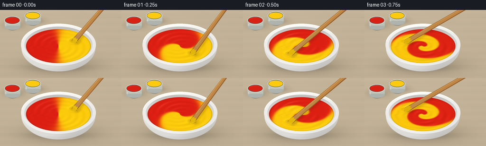
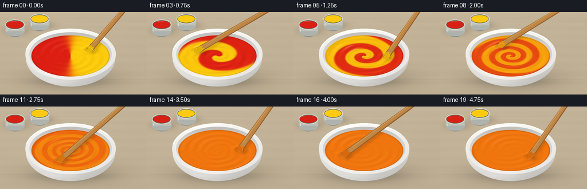

CODING AGENTS AS PIXEL WORLD MODELS
traex/GPT-6.1-Sol · phygen_122
点击播放 · 原生 RGB 像素
逐轮保存的候选
回放视频、检查图与代码变化。
每份候选均可单独播放。实际图片检查记录在下方工具轨迹中。
候选 01播放与检查图
点击播放 · 原生 RGB 像素


展开代码变化
--- 上一保存版本
+++ 本次保存版本
@@ -0,0 +1,163 @@
+from pathlib import Path
+import numpy as np
+from PIL import Image, ImageDraw, ImageFilter
+import artifact_io
+
+ROOT=Path(__file__).resolve().parent
+S=3
+W,H=256*S,144*S
+Y,X=np.mgrid[0:H,0:W].astype(float)
+X/=S; Y/=S
+rng=np.random.default_rng(122)
+
+def ellipse_mask(cx,cy,rx,ry):
+ return np.clip((1-((X-cx)/rx)**2-((Y-cy)/ry)**2)*min(rx,ry)*S*.5+.5,0,1)
+
+def over(a,c,m):
+ if np.ndim(c)==1: c=np.broadcast_to(c,a.shape)
+ return a*(1-m[...,None])+c*m[...,None]
+
+def pil(arr): return Image.fromarray(np.uint8(np.clip(arr,0,255)))
+def line(d,xy,fill,width=1): d.line([(int(x*S),int(y*S)) for x,y in xy],fill=fill,width=int(width*S))
+def ell(d,box,fill,outline=None,width=1): d.ellipse(tuple(int(v*S) for v in box),fill=fill,outline=outline,width=max(1,int(width*S)))
+def poly(d,p,fill): d.polygon([(int(x*S),int(y*S)) for x,y in p],fill=fill)
+
+# Warm, subtly textured studio workbench. All scene elements are drawn from geometry.
+noise=rng.normal(0,.45,(H,W))
+grain=np.sin(.40*Y+.45*np.sin(X*.017))+ .24*np.sin(2.7*Y+.6*np.sin(X*.028))
+light=5*np.exp(-((X-77)/145)**2-((Y-9)/110)**2)-.021*Y
+base=np.zeros((H,W,3))
+for k,c in enumerate((194,178,151)): base[:,:,k]=c+light+grain*(1.15 if k==0 else .9)+noise
+for seam in [17,118]:
+ shadow=np.exp(-((Y-seam-.5*np.sin(X*.017))/.48)**2)
+ base-=shadow[...,None]*np.array([5,5,4])
+# Paint tins standing in the back-left, with colored paint visible in their mouths.
+def tin(arr,cx,cy,col):
+ shadow=np.exp(-((X-cx-3)/20)**2-((Y-cy-11)/7)**2)*.20
+ arr*=1-shadow[...,None]
+ im=pil(arr); d=ImageDraw.Draw(im)
+ ell(d,(cx-17,cy-7,cx+17,cy+21),(125,132,132))
+ d.rectangle((int((cx-17)*S),int(cy*S),int((cx+17)*S),int((cy+12)*S)),fill=(180,184,177))
+ ell(d,(cx-17,cy+3,cx+17,cy+20),(176,180,175))
+ d.rectangle((int((cx-16)*S),int((cy+1)*S),int((cx+16)*S),int((cy+11)*S)),fill=(193,195,185))
+ ell(d,(cx-17,cy-9,cx+17,cy+9),(213,214,201))
+ ell(d,(cx-15.6,cy-7.4,cx+15.6,cy+7.4),(96,99,90))
+ ell(d,(cx-14.7,cy-6.4,cx+14.7,cy+6.4),col)
+ line(d,[(cx-12,cy-5),(cx-6,cy-6),(cx+3,cy-6.3)],tuple(min(255,int(v*.6+100)) for v in col),.8)
+ line(d,[(cx-14,cy+7),(cx-14,cy+12)],(223,224,214),1)
+ return np.asarray(im).astype(float)
+base=tin(base,26,22,(217,35,23))
+base=tin(base,69,12,(255,202,18))
+# Bowl cast shadow.
+sh=.20*np.exp(-((X-127)/74)**2-((Y-117)/19)**2)+.11*np.exp(-((X-123)/58)**2-((Y-122)/7)**2)
+base*=1-sh[...,None]
+# Rounded white ceramic bowl exterior, with a darker shaded right wall.
+body=ellipse_mask(123,80,78,50)
+q=(X-123)/78
+by=(Y-80)/50
+bodylight=225+12*np.exp(-((q+.43)/.5)**2)-27*np.clip(by,0,1)-20*np.clip(q,0,1)+2*np.sin(Y*.08)
+bodycol=np.stack([bodylight+4,bodylight+3,bodylight],axis=-1)
+base=over(base,bodycol,body)
+# Soft reflected light near the bottom.
+shine=4*np.exp(-((Y-121)/2.1)**2)*np.exp(-((X-109)/37)**2)
+base+=shine[...,None]*body[...,None]
+# Elliptical lip and recessed interior.
+rim=ellipse_mask(123,73.5,79,44.5)
+rho=np.sqrt(((X-123)/79)**2+((Y-73.5)/44.5)**2)
+rimlight=241+8*np.exp(-((X-91)/39)**2)-12*(Y-35)/90+3*np.cos((X-123)/30)
+base=over(base,np.stack([rimlight+2,rimlight+1,rimlight-2],-1),rim)
+inner=ellipse_mask(123,73.5,72,38.5)
+iv=199+22*(Y-37)/77-10*np.exp(-((Y-40)/8)**2)
+base=over(base,np.stack([iv+4,iv+3,iv],-1),inner)
+# Narrow rim highlights.
+im=pil(base); d=ImageDraw.Draw(im)
+d.arc((int(44*S),int(29*S),int(202*S),int(118*S)),190,325,fill=(255,254,247),width=2*S)
+base=np.asarray(im).astype(float)
+
+CX,CY=123,76.5
+RX,RY=68.5,36
+u=(X-CX)/RX; v=(Y-CY)/RY
+r=np.sqrt(u*u+v*v); theta=np.arctan2(v,u)
+paintmask=ellipse_mask(CX,CY,RX,RY)
+red=np.array([224.,31.,19.]); yellow=np.array([255.,205.,12.])
+
+def render(i):
+ t=i/4
+ angle=-.55+2*np.pi*.88*t
+ tipx=CX+RX*.57*np.cos(angle)
+ tipy=CY+RY*.57*np.sin(angle)
+ # A differential vortex stretches two equal-volume paint regions into ribbons.
+ twist=t*(2.5+9.2*np.maximum(0,1-r)**1.4)
+ warped=theta-twist + .16*np.sin(3*theta-2*t)*np.minimum(t,1)*r
+ strength=np.exp(-(t/2.25)**3)
+ concentration=.5+.5*strength*np.tanh(5.5*np.cos(warped))
+ rgb=red[None,None,:]*(1-concentration[...,None])+yellow[None,None,:]*concentration[...,None]
+ mixed=4*concentration*(1-concentration)
+ rgb+=mixed[...,None]*np.array([4.,1.,-1.])
+ # Viscous wake ridges, moving reflections and a tiny depression around the paddle.
+ dx=(X-tipx)/RX; dy=(Y-tipy)/RY
+ dist=np.sqrt(dx*dx+dy*dy)
+ h=.006*np.sin(28*r-2.6*theta+4*t)*np.clip(r*2,0,1)
+ h+=.008*np.sin(14*r+2*warped)*strength*np.minimum(t,1)
+ h-=.046*np.exp(-(dist/.105)**2)
+ h+=.021*np.exp(-((dist-.16)/.055)**2)
+ h+=.009*np.exp(-((r-.975)/.023)**2)
+ gy,gx=np.gradient(h,1/(RY*S),1/(RX*S))
+ nx=-gx; ny=-gy; nz=np.ones_like(nx)
+ norm=np.sqrt(nx*nx+ny*ny+nz*nz); nx/=norm;ny/=norm;nz/=norm
+ diffuse=np.clip(-.35*nx-.42*ny+.836*nz,0,1)
+ shading=.77+.26*diffuse
+ rgb*=shading[...,None]
+ # Smooth overhead softbox gives the paint a wet, satin-gloss finish.
+ highlight=np.clip(-.22*nx-.30*ny+.928*nz,0,1)**55
+ softbox=np.exp(-((u+.35)/.52)**2-((v+.47)/.27)**2)
+ highlight*=.22+.62*softbox
+ rgb=rgb*(1-.31*highlight[...,None])+np.array([255,245,215])[None,None,:]*(.31*highlight[...,None])
+ # Bowl-edge meniscus and wet specular rim.
+ edge=np.exp(-((r-.978)/.014)**2)
+ rgb*=1-.105*edge[...,None]
+ arr=over(base,rgb,paintmask)
+ # Submerged paddle shadow, offset away from the softbox.
+ toolshadow=.19*np.exp(-(((X-tipx-3)/7)**2+((Y-tipy-2)/3.1)**2))*paintmask
+ arr*=1-toolshadow[...,None]
+ im=pil(arr)
+ # Wooden stirrer. Its lower blade describes a brisk circular path in the paint.
+ # The handle exits at the top-right, allowing the motion to remain unobstructed.
+ hx=226+3*np.sin(angle*.5); hy=-14
+ vx=hx-tipx;vy=hy-tipy;length=np.hypot(vx,vy)
+ ex=vx/length;ey=vy/length; px=-ey;py=ex
+ a=np.array([tipx,tipy]); b=np.array([hx,hy])
+ def point(f,offset): return tuple(a+(b-a)*f+np.array([px,py])*offset)
+ # Soft shaft shadow on the far inner wall and paint.
+ shlayer=Image.new('RGBA',(W,H));sd=ImageDraw.Draw(shlayer)
+ pts=[point(0,-5),point(1,-3),point(1,3),point(0,5)]
+ sd.polygon([(int((x+3)*S),int((y+4)*S)) for x,y in pts],fill=(48,33,13,42))
+ shlayer=shlayer.filter(ImageFilter.GaussianBlur(2*S))
+ # Only surface shadow is visible below the stick, not across unrelated background.
+ sa=np.asarray(shlayer).copy();sa[:,:,3]=(sa[:,:,3]*paintmask).astype(np.uint8)
+ im=Image.alpha_composite(im.convert('RGBA'),Image.fromarray(sa))
+ d=ImageDraw.Draw(im)
+ # Round-ended paddle silhouette and narrow illuminated bevel.
+ poly(d,[point(0,-5.4),point(.17,-4.8),point(1,-3.9),point(1,3.9),point(.17,4.8),point(0,5.4)],(147,93,42,255))
+ ell(d,(tipx-5.0,tipy-3.7,tipx+5.0,tipy+3.7),(163,103,45,255))
+ poly(d,[point(.04,-4.2),point(1,-3.6),point(1,2.0),point(.04,3.7)],(192,137,72,255))
+ line(d,[point(.13,-2.8),point(.99,-2.6)],(218,166,96,255),.8)
+ line(d,[point(.16,1.8),point(.99,1.2)],(168,110,53,255),.55)
+ line(d,[point(.24,-.3),point(.58,-.9),point(.9,-.5)],(178,117,55,255),.5)
+ # The immersed tip is coated in the actual local paint color.
+ ty=int(np.clip(tipy*S,0,H-1));tx=int(np.clip(tipx*S,0,W-1))
+ wet=tuple(int(c) for c in np.clip(rgb[ty,tx]*.91,0,255))+(255,)
+ poly(d,[point(0,-5.1),point(.055,-4.8),point(.075,-2),point(.058,0),point(.082,3),point(.035,4.8),point(0,5.1)],wet)
+ ell(d,(tipx-4.7,tipy-2.6,tipx+4.7,tipy+3.7),wet)
+ line(d,[(tipx-3,tipy+2),(tipx,tipy+3),(tipx+3,tipy+2)],tuple(min(255,c+27) for c in wet[:3])+(255,),.6)
+ # A short curved crest follows the moving blade, demonstrating the thick liquid drag.
+ crest=[]
+ for aa in np.linspace(angle-.36,angle+.22,25):
+ crest.append((CX+RX*.64*np.cos(aa),CY+RY*.64*np.sin(aa)))
+ color=tuple(int(c) for c in np.clip(rgb[ty,tx]*.85+34,0,255))+(255,)
+ line(d,crest,color,.75)
+ return np.asarray(im.convert('RGB').resize((256,144),Image.Resampling.LANCZOS),dtype=np.uint8)
+
+frames=np.stack([render(i) for i in range(20)])
+artifact_io.save(frames,ROOT)
+print('Saved',frames.shape,frames.dtype)
可观测工具轨迹
实际执行的命令与返回图片。
命令 1exit 0
/bin/bash -lc "ls -la && cat prompt.txt && printf '\\n---RULES---\\n' && cat GENERATION_RULES.md && printf '\\n---SPEC---\\n' && cat task_spec.json"
命令 2exit 0
/bin/bash -lc 'cat artifact_io.py'
命令 3exit 0
/bin/bash -lc "cat > generate.py <<'PY'
from pathlib import Path
import numpy as np
from PIL import Image, ImageDraw, ImageFilter
import artifact_io
ROOT=Path(__file__).resolve().parent
S=3
W,H=256*S,144*S
Y,X=np.mgrid[0:H,0:W].astype(float)
X/=S; Y/=S
rng=np.random.default_rng(122)
def ellipse_mask(cx,cy,rx,ry):
return np.clip((1-((X-cx)/rx)**2-((Y-cy)/ry)**2)*min(rx,ry)*S*.5+.5,0,1)
def over(a,c,m):
if np.ndim(c)==1: c=np.broadcast_to(c,a.shape)
return a*(1-m[...,None])+c*m[...,None]
def pil(arr): return Image.fromarray(np.uint8(np.clip(arr,0,255)))
def line(d,xy,fill,width=1): d.line([(int(x*S),int(y*S)) for x,y in xy],fill=fill,width=int(width*S))
def ell(d,box,fill,outline=None,width=1): d.ellipse(tuple(int(v*S) for v in box),fill=fill,outline=outline,width=max(1,int(width*S)))
def poly(d,p,fill): d.polygon([(int(x*S),int(y*S)) for x,y in p],fill=fill)
# Warm, subtly textured studio workbench. All scene elements are drawn from geometry.
noise=rng.normal(0,.45,(H,W))
grain=np.sin(.40*Y+.45*np.sin(X*.017))+ .24*np.sin(2.7*Y+.6*np.sin(X*.028))
light=5*np.exp(-((X-77)/145)**2-((Y-9)/110)**2)-.021*Y
base=np.zeros((H,W,3))
for k,c in enumerate((194,178,151)): base[:,:,k]=c+light+grain*(1.15 if k==0 else .9)+noise
for seam in [17,118]:
shadow=np.exp(-((Y-seam-.5*np.sin(X*.017))/.48)**2)
base-=shadow[...,None]*np.array([5,5,4])
# Paint tins standing in the back-left, with colored paint visible in their mouths.
def tin(arr,cx,cy,col):
shadow=np.exp(-((X-cx-3)/20)**2-((Y-cy-11)/7)**2)*.20
arr*=1-shadow[...,None]
im=pil(arr); d=ImageDraw.Draw(im)
ell(d,(cx-17,cy-7,cx+17,cy+21),(125,132,132))
d.rectangle((int((cx-17)*S),int(cy*S),int((cx+17)*S),int((cy+12)*S)),fill=(180,184,177))
ell(d,(cx-17,cy+3,cx+17,cy+20),(176,180,175))
d.rectangle((int((cx-16)*S),int((cy+1)*S),int((cx+16)*S),int((cy+11)*S)),fill=(193,195,185))
ell(d,(cx-17,cy-9,cx+17,cy+9),(213,214,201))
ell(d,(cx-15.6,cy-7.4,cx+15.6,cy+7.4),(96,99,90))
ell(d,(cx-14.7,cy-6.4,cx+14.7,cy+6.4),col)
line(d,[(cx-12,cy-5),(cx-6,cy-6),(cx+3,cy-6.3)],tuple(min(255,int(v*.6+100)) for v in col),.8)
line(d,[(cx-14,cy+7),(cx-14,cy+12)],(223,224,214),1)
return np.asarray(im).astype(float)
base=tin(base,26,22,(217,35,23))
base=tin(base,69,12,(255,202,18))
# Bowl cast shadow.
sh=.20*np.exp(-((X-127)/74)**2-((Y-117)/19)**2)+.11*np.exp(-((X-123)/58)**2-((Y-122)/7)**2)
base*=1-sh[...,None]
# Rounded white ceramic bowl exterior, with a darker shaded right wall.
body=ellipse_mask(123,80,78,50)
q=(X-123)/78
by=(Y-80)/50
bodylight=225+12*np.exp(-((q+.43)/.5)**2)-27*np.clip(by,0,1)-20*np.clip(q,0,1)+2*np.sin(Y*.08)
bodycol=np.stack([bodylight+4,bodylight+3,bodylight],axis=-1)
base=over(base,bodycol,body)
# Soft reflected light near the bottom.
shine=4*np.exp(-((Y-121)/2.1)**2)*np.exp(-((X-109)/37)**2)
base+=shine[...,None]*body[...,None]
# Elliptical lip and recessed interior.
rim=ellipse_mask(123,73.5,79,44.5)
rho=np.sqrt(((X-123)/79)**2+((Y-73.5)/44.5)**2)
rimlight=241+8*np.exp(-((X-91)/39)**2)-12*(Y-35)/90+3*np.cos((X-123)/30)
base=over(base,np.stack([rimlight+2,rimlight+1,rimlight-2],-1),rim)
inner=ellipse_mask(123,73.5,72,38.5)
iv=199+22*(Y-37)/77-10*np.exp(-((Y-40)/8)**2)
base=over(base,np.stack([iv+4,iv+3,iv],-1),inner)
# Narrow rim highlights.
im=pil(base); d=ImageDraw.Draw(im)
d.arc((int(44*S),int(29*S),int(202*S),int(118*S)),190,325,fill=(255,254,247),width=2*S)
base=np.asarray(im).astype(float)
CX,CY=123,76.5
RX,RY=68.5,36
u=(X-CX)/RX; v=(Y-CY)/RY
r=np.sqrt(u*u+v*v); theta=np.arctan2(v,u)
paintmask=ellipse_mask(CX,CY,RX,RY)
red=np.array([224.,31.,19.]); yellow=np.array([255.,205.,12.])
def render(i):
t=i/4
angle=-.55+2*np.pi*.88*t
tipx=CX+RX*.57*np.cos(angle)
tipy=CY+RY*.57*np.sin(angle)
# A differential vortex stretches two equal-volume paint regions into ribbons.
twist=t*(2.5+9.2*np.maximum(0,1-r)**1.4)
warped=theta-twist + .16*np.sin(3*theta-2*t)*np.minimum(t,1)*r
strength=np.exp(-(t/2.25)**3)
concentration=.5+.5*strength*np.tanh(5.5*np.cos(warped))
rgb=red[None,None,:]*(1-concentration[...,None])+yellow[None,None,:]*concentration[...,None]
mixed=4*concentration*(1-concentration)
rgb+=mixed[...,None]*np.array([4.,1.,-1.])
# Viscous wake ridges, moving reflections and a tiny depression around the paddle.
dx=(X-tipx)/RX; dy=(Y-tipy)/RY
dist=np.sqrt(dx*dx+dy*dy)
h=.006*np.sin(28*r-2.6*theta+4*t)*np.clip(r*2,0,1)
h+=.008*np.sin(14*r+2*warped)*strength*np.minimum(t,1)
h-=.046*np.exp(-(dist/.105)**2)
h+=.021*np.exp(-((dist-.16)/.055)**2)
h+=.009*np.exp(-((r-.975)/.023)**2)
gy,gx=np.gradient(h,1/(RY*S),1/(RX*S))
nx=-gx; ny=-gy; nz=np.ones_like(nx)
norm=np.sqrt(nx*nx+ny*ny+nz*nz); nx/=norm;ny/=norm;nz/=norm
diffuse=np.clip(-.35*nx-.42*ny+.836*nz,0,1)
shading=.77+.26*diffuse
rgb*=shading[...,None]
# Smooth overhead softbox gives the paint a wet, satin-gloss finish.
highlight=np.clip(-.22*nx-.30*ny+.928*nz,0,1)**55
softbox=np.exp(-((u+.35)/.52)**2-((v+.47)/.27)**2)
highlight*=.22+.62*softbox
rgb=rgb*(1-.31*highlight[...,None])+np.array([255,245,215])[None,None,:]*(.31*highlight[...,None])
# Bowl-edge meniscus and wet specular rim.
edge=np.exp(-((r-.978)/.014)**2)
rgb*=1-.105*edge[...,None]
arr=over(base,rgb,paintmask)
# Submerged paddle shadow, offset away from the softbox.
toolshadow=.19*np.exp(-(((X-tipx-3)/7)**2+((Y-tipy-2)/3.1)**2))*paintmask
arr*=1-toolshadow[...,None]
im=pil(arr)
# Wooden stirrer. Its lower blade describes a brisk circular path in the paint.
# The handle exits at the top-right, allowing the motion to remain unobstructed.
hx=226+3*np.sin(angle*.5); hy=-14
vx=hx-tipx;vy=hy-tipy;length=np.hypot(vx,vy)
ex=vx/length;ey=vy/length; px=-ey;py=ex
a=np.array([tipx,tipy]); b=np.array([hx,hy])
def point(f,offset): return tuple(a+(b-a)*f+np.array([px,py])*offset)
# Soft shaft shadow on the far inner wall and paint.
shlayer=Image.new('RGBA',(W,H));sd=ImageDraw.Draw(shlayer)
pts=[point(0,-5),point(1,-3),point(1,3),point(0,5)]
sd.polygon([(int((x+3)*S),int((y+4)*S)) for x,y in pts],fill=(48,33,13,42))
shlayer=shlayer.filter(ImageFilter.GaussianBlur(2*S))
# Only surface shadow is visible below the stick, not across unrelated background.
sa=np.asarray(shlayer).copy();sa[:,:,3]=(sa[:,:,3]*paintmask).astype(np.uint8)
im=Image.alpha_composite(im.convert('RGBA'),Image.fromarray(sa))
d=ImageDraw.Draw(im)
# Round-ended paddle silhouette and narrow illuminated bevel.
poly(d,[point(0,-5.4),point(.17,-4.8),point(1,-3.9),point(1,3.9),point(.17,4.8),point(0,5.4)],(147,93,42,255))
ell(d,(tipx-5.0,tipy-3.7,tipx+5.0,tipy+3.7),(163,103,45,255))
poly(d,[point(.04,-4.2),point(1,-3.6),point(1,2.0),point(.04,3.7)],(192,137,72,255))
line(d,[point(.13,-2.8),point(.99,-2.6)],(218,166,96,255),.8)
line(d,[point(.16,1.8),point(.99,1.2)],(168,110,53,255),.55)
line(d,[point(.24,-.3),point(.58,-.9),point(.9,-.5)],(178,117,55,255),.5)
# The immersed tip is coated in the actual local paint color.
ty=int(np.clip(tipy*S,0,H-1));tx=int(np.clip(tipx*S,0,W-1))
wet=tuple(int(c) for c in np.clip(rgb[ty,tx]*.91,0,255))+(255,)
poly(d,[point(0,-5.1),point(.055,-4.8),point(.075,-2),point(.058,0),point(.082,3),point(.035,4.8),point(0,5.1)],wet)
ell(d,(tipx-4.7,tipy-2.6,tipx+4.7,tipy+3.7),wet)
line(d,[(tipx-3,tipy+2),(tipx,tipy+3),(tipx+3,tipy+2)],tuple(min(255,c+27) for c in wet[:3])+(255,),.6)
# A short curved crest follows the moving blade, demonstrating the thick liquid drag.
crest=[]
for aa in np.linspace(angle-.36,angle+.22,25):
crest.append((CX+RX*.64*np.cos(aa),CY+RY*.64*np.sin(aa)))
color=tuple(int(c) for c in np.clip(rgb[ty,tx]*.85+34,0,255))+(255,)
line(d,crest,color,.75)
return np.asarray(im.convert('RGB').resize((256,144),Image.Resampling.LANCZOS),dtype=np.uint8)
frames=np.stack([render(i) for i in range(20)])
artifact_io.save(frames,ROOT)
print('Saved',frames.shape,frames.dtype)
PY
python generate.py"视觉工具实际返回图片 1

保存候选 1 份；完成命令 3 次；可验证图片返回 1 张。原始 API 响应与完整日志保留在本地。